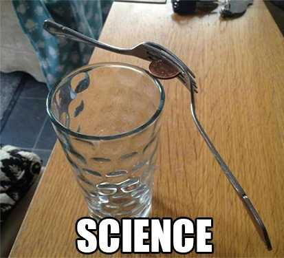
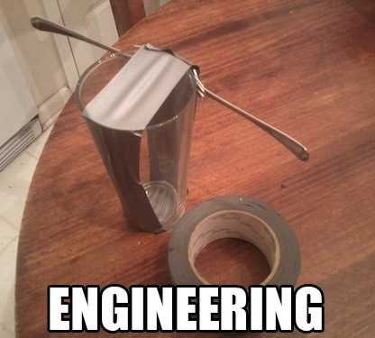
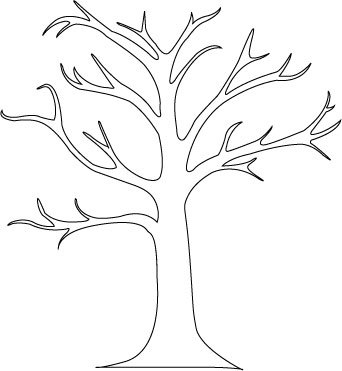
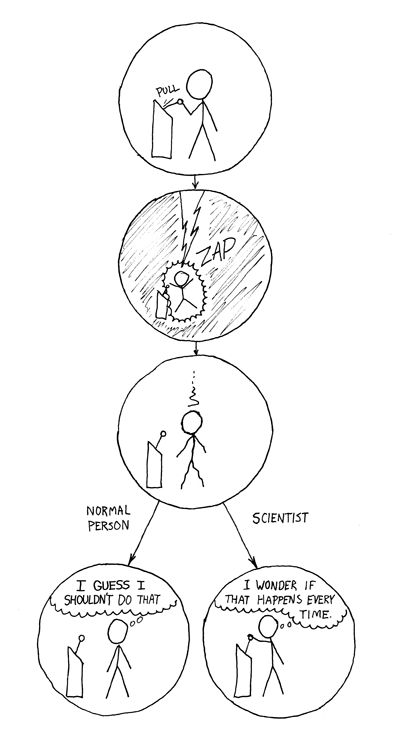

工程师和科学家的思维方式有什么重要区别？


@Benjamin：
《费曼物理学讲义》有个比喻，说如果把整个世界比作一个棋盘，宇宙的规律就是其中的下棋规则，科学家像是想弄清楚所有这些规则的人，而工程师是那些想要试图运用这些规则的人。这就像那些发明国际象棋的人，和那些国际象棋大师，谁更厉害不好比较。
科学家更倾向于享受发现和理解事物规律的美一些， 工程师倾向于享受根据规律应用和创造的成就感一些。
@DD YY:
我打算从更实用的角度给分析一下为什么科学家和工程师会有这种思维方式的差异，这实际上是他们的工作性质决定的。
革命性新技术的新技术都是靠科学家的推动出现的。科学家在产品生命周期的哪个地方出现呢？他们不在出现，他们的工作都在初始研发R&D之前！科学家的使命是发现或者发明新的技术，他们遇到的问题是开放的，他们做事情的目标通常也是模糊不量化的。举例来讲，科学家会去寻找一个新的电池材料，让储能和放电效率成倍提高，至于什么材料一般很少有约束条件，最多是说单位体积储能越多越好。
科学家们的工作方式和思维方式也是发散的，他们会建立各种理论模型，测试各种材料，做大量计算和试验，尝试各种道路去寻找最佳的材料。如果把科学家工作的结果记录下来，会是这样一棵树，他们会在树上标注出每个叶子是死路还是活路，然后摘出最高的一片叶子，做出一个粗糙的原型验证这一结论，高高兴兴去发表论文。比如，他们说他们发明了一种新的材料，能够让电池储能密度大100倍。他们会对自己说：“了不起的突破啊，赶紧申请专利然后宣布出去！”。有了漂亮的实验结果和一流的论文，他们的工作一般到此就结束了。

轮到工程师上场了，他们遇到的问题是封闭的，做事情的目标一般也是清晰量化的。他们的问题是产品经理丢给他们的，产品经理手头有经费预算、有市场期望、有市场上可能的技术的可行性报告（就是科学家画的那棵难看的树）、也有一些科学家做出来的粗糙原型。比如，工程师会遇到这样的问题：在1年内，有100万预算，做出一款性能是目前产品10倍，价格是现有产品的10分之1的手机电池，还要能通过主流市场的安全认证。（工程师说，你让我死吧！！！）
通常工程师的工作方式和思维方式是收敛的，他们会在上述大树里面砍掉各个分支，找到一个够用的叶子（@陈章鱼说的妥协）。接着刚才的例子，工程师开始确定产品技术路线了，可行性分析阶段，发觉科学家论文里描述的最优秀材料好是好，但是太容易爆炸了，把这个分支砍掉；再看另一个分支，材料太贵，砍掉；再看一个分支，不容易加工，砍掉……直到找到一个材料什么条件都符合。好那么就用这个材料来做电池，下一步就是确定产品设计、加工工艺、经费分配、时间表等等开始干活。
产品发布了，工程师的苦日子就到头了吗？刚开始！还有售前工程师要对客户和合作伙伴做技术培训、有产品工程师负责产品日常维护（小改款）、有售后工程师负责到处救火，万一产品发布出去市场反响不好，研发工程师还要考虑技术改进，等等等等……
以上从产品生命周期角度分析了科学家和工程师的思维方式。对于任何创新型企业来讲，两类人才都是非常有价值的；工程师需要面对市场需求，而需要科学家给出创新的第一推动力。一般只有大型的企业和大学才养得起科学家，因为养科学家真的是很昂贵的事情，而且你不知道这只母鸡啥时候下蛋——也许他一辈子都放不出一个屁，也许他就是下一个诺贝尔奖得主。另外科学家需要宽松的土壤才能发挥他们的创造力长出一棵思维的参天大树。
唔，就是这样。上个xkcd的花絮：科学家就是傻乎乎地寻找事物的规律，并记录下来——每次动那个拨杆都会被雷劈啊——我们可以用这个玩意儿来发电。

五一刚过，祝各位劳动者回到岗位工作更上一层楼。